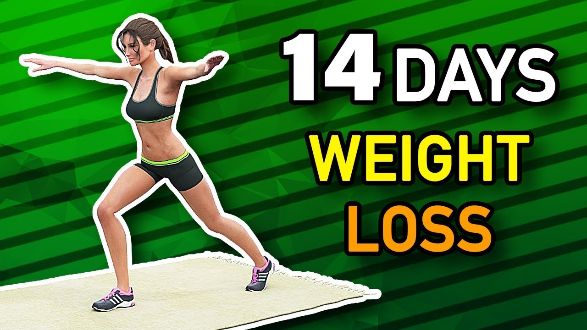

Full Body Begginer Workout ()
Team, get ready for 25 minutes of full body HIIT! You can expect no repeat cardio & strength exercises and all you need is a mat! Get your heart pumping, burn calories and have fun - I promise you'll feel the HIGH after you're finished! Let's do it!
| Muscles Worked | Full Body |
|---|---|
| Time | 25 Min + cool down stretches |
| Equipment | Bodyweight Only, No Equipment |
Workout
Round 1: 40 sec on, 10 sec off
- Standing Jacks
- 4 Crunches + 4 Squat Pulses
- Squats
- Walk It Out
- Reach Up & Down
- Plank Side Steps
- Push Up + Child's Pose
- Split Squat R
- Split Squat L
- Step Back Burpee
- Plank Toe Tap
- Squat + Crunch
- Slow Climbers
- Squat + 3 sec hold
- Shoulder Taps
- Superman
- Push Ups
- Low Plank Leg Raises
Round 2: 30 sec on, 10 sec off
- Crunches
- Lean Back Body Twists
- Reach + Knee Hug
- Legs In Up Down
- Ab Hold
- 1 Leg Glute Bridge R
- 1 Leg Glute Bridge Pulses R
- 1 Leg Glute Bridge L
- 1 Leg Glute Bridge Pulses L
- Step Back Burpee + 2 Punches
- Leg Lift + Push Up R
- Leg Lift + Push Up L
- Plank Front Back Walk
- Low Plank Dips
- Low Plank Hold
Cool Down: 30 sec on, 10 sec off
- Child's Pose
- Deep Lunge R
- Deep Lunge L
- Inhale Exhale
Please remember that we are all different and that you can make this your own workout ♡ Take a longer break when you need to.
14-Day Weight Loss Challenge
Are you ready to start losing weight at home in just 14 days? If so, then this workout routine will help you achieve this goal.
This is a pretty intensive exercise program that you can do at home because you don't need dumbbells, weights, or any other special equipment. Just your body weight!
This is a 2-week challenge which means you need to do this workout EVERY DAY for the next 14 days if you want to see good fat loss results.

Nutrition Tips
| Rule | Description |
|---|---|
| 1. | Stay away from sugar |
| 2. | Stay away from grains |
Let's start the weight loss challenge...